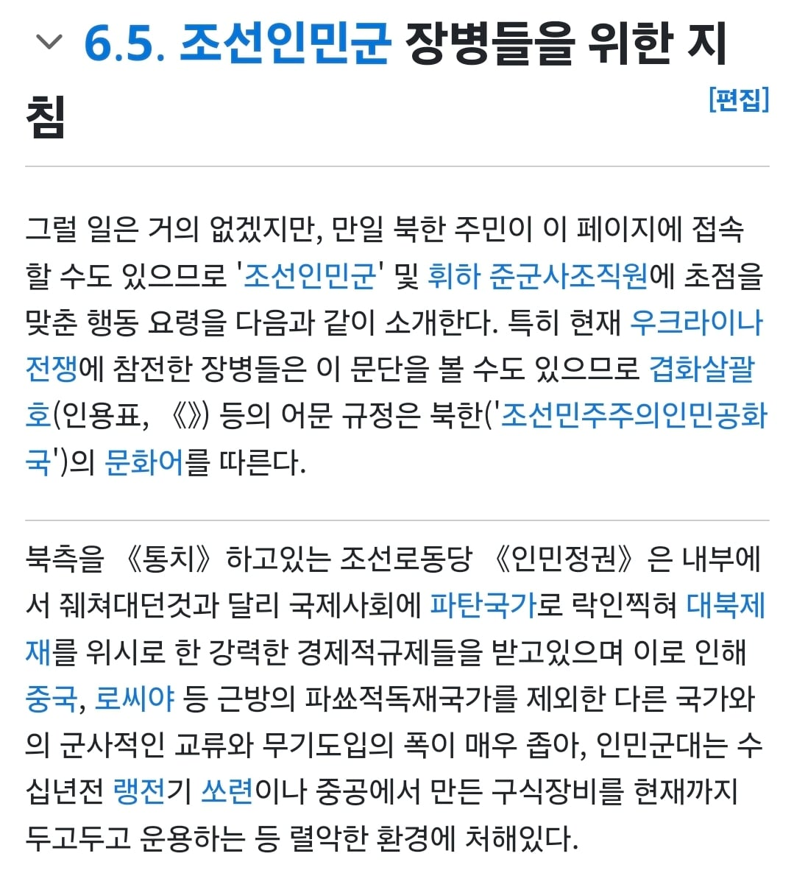
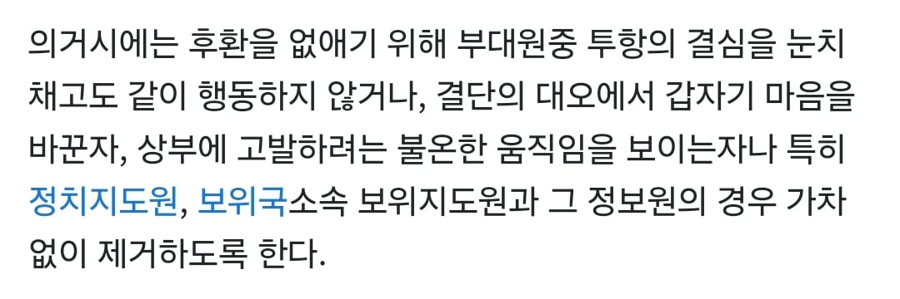

뭔 북한군 장병들을 대상으로 한 지침도 있더라 ㅅㅂㅋㅋㅋㅋㅋㅋㅋㅋㅋㅋ

투항 할 때 정치장교, 보위지도원을 제거하고 투항하라는 지침도 있음.... ㄷㄷ

뭔 북한군 장병들을 대상으로 한 지침도 있더라 ㅅㅂㅋㅋㅋㅋㅋㅋㅋㅋㅋㅋ

투항 할 때 정치장교, 보위지도원을 제거하고 투항하라는 지침도 있음.... ㄷㄷ
별게 다있네 ㅋㅋㅋㅋ
군에서는 여러가지 시나리오별 대응전략을 만들잖아
핵전쟁이나 북한 정권 붕괴나 온갖 상황에 대한 전략중에 전쟁 중 일반병에 대한 회유 매뉴얼도 있을거고 저 글을 쓴 애는 그 정보에 어느정도 접근이 가능한 병사나 장교아닐까 싶음
음... 일리가 있습니다... ㄷㄷ
아무튼 글 봐주셔서 감사합니다! 같이보기 글도 한번 봐주시면 감사드리겠습니다!
글솜씨를 보아하니 낭구백과 사관 사이에 두만강 건너 달음박질한 자가 있는 거이 틀림없시우다